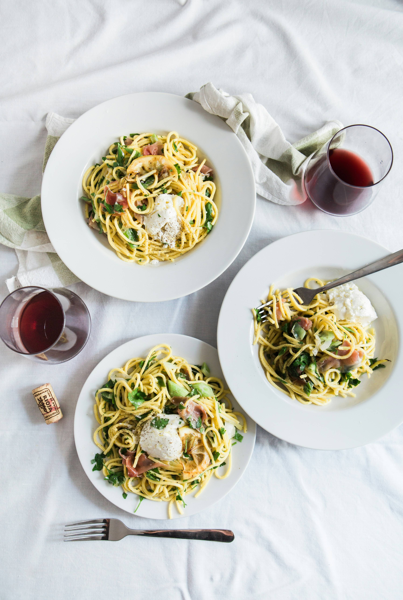
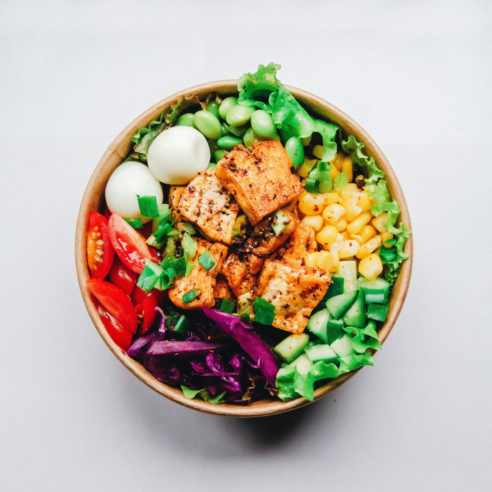
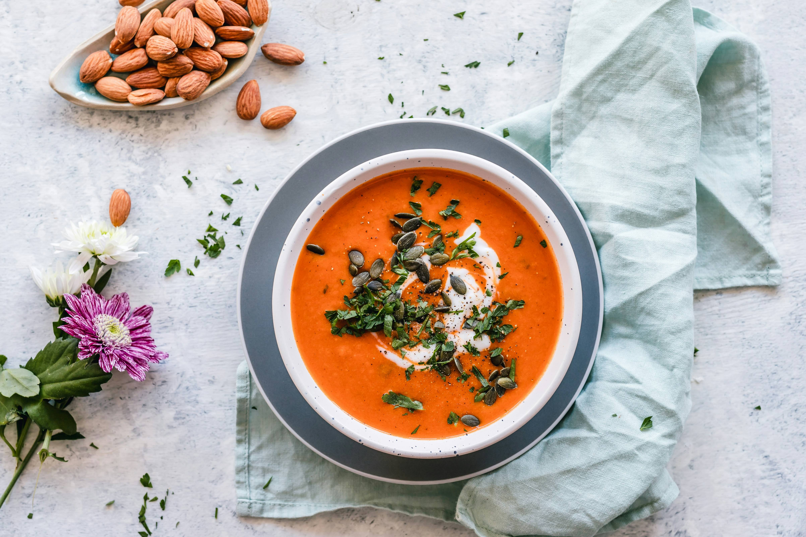
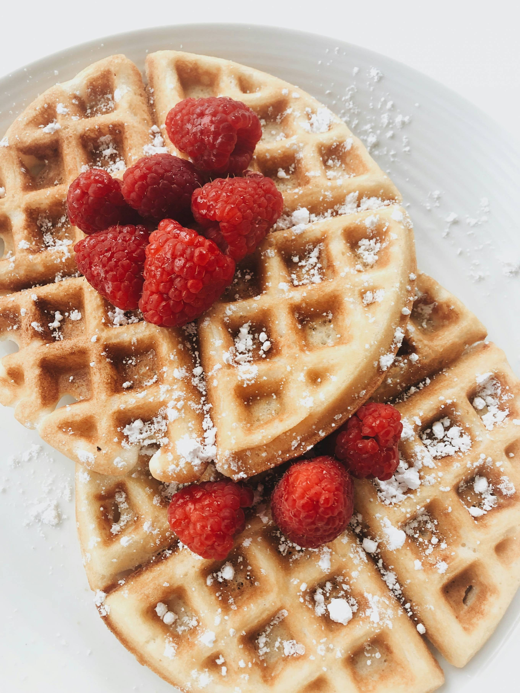
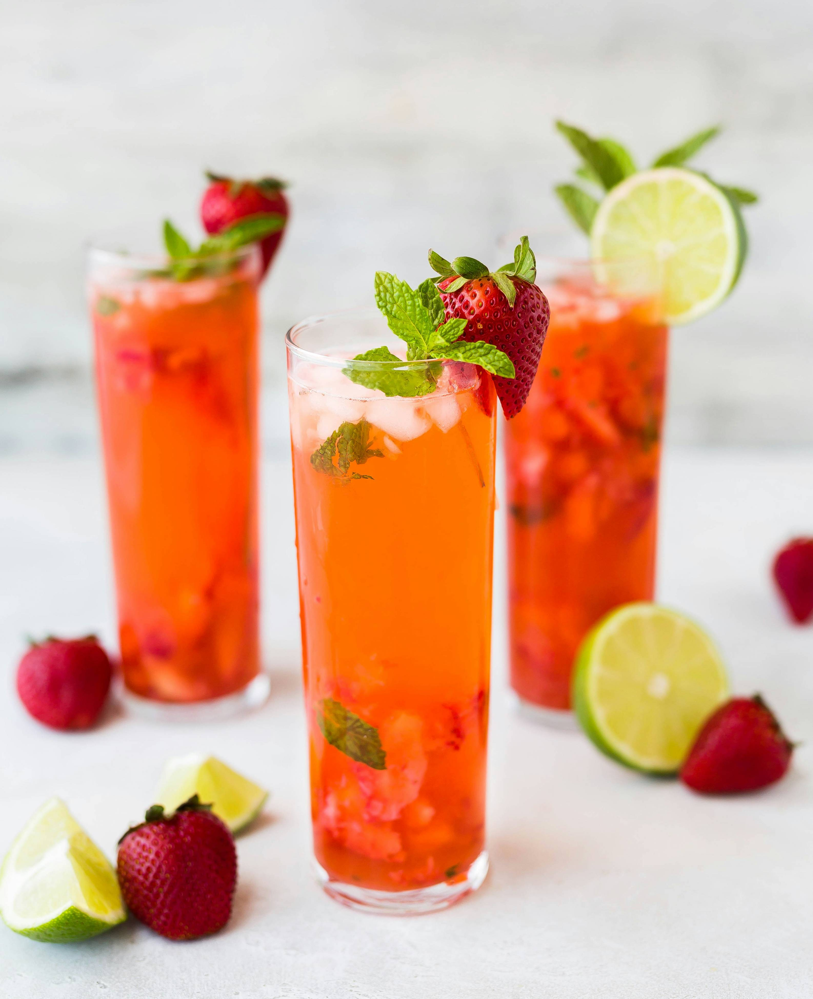

Weekly plan on Trello
The initial idea is you can drag a card to move it to another day. But I couldn't do the moving because I don't know JavaScript, so they only jiggle a bit when you hover on them for now.
Monday



Tuesday

Wednesday

Thursday


Friday
